Вкратце по талантам и моей раскачке
"Силу", "ловкость", "выносливость" - почти на фул с золотыми талантами.
"Интеллект" - достаточно на половину.
"Знаки" - только Ард и Игни и то не вкладывая золотых талантов. Остальные знаки бесполезны.
"Стили мечей": И для стального и для серебряного меча прокачка на фул веток Силового стиля и
Группового
включая золотые таланты. Быстрый стиль советую не качать, только если некуда больше вкладывать
таланты.
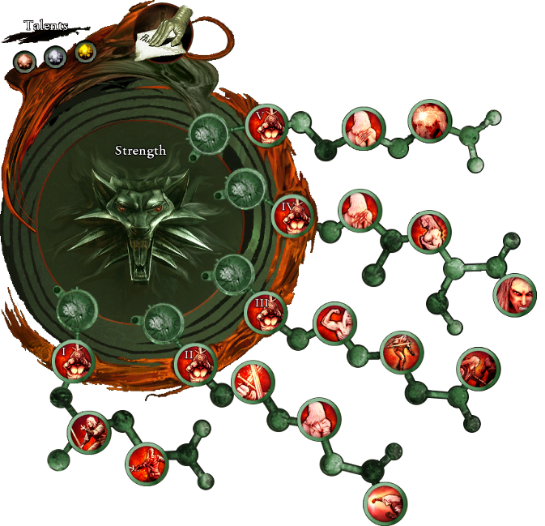 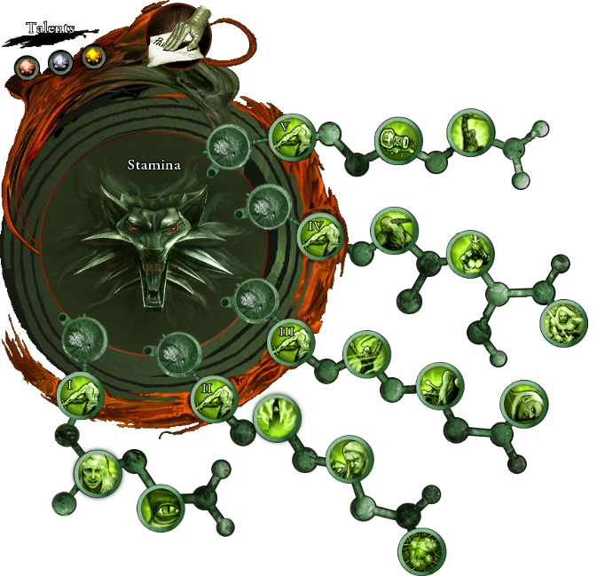 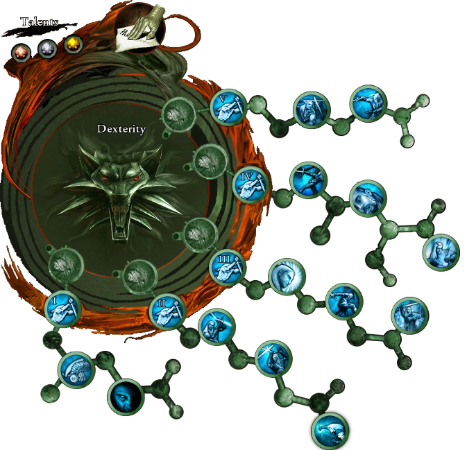
Более подробно по всем веткам талантов
Таланты
Сила - Много полезных талантов. Плюс в этой ветке присутствуют таланты, которые открывают
возможность
качать
таланты Силовых стилей мечей. Качал ветку почти полностью, включая золотые таланты.
Ловкость - Так же много хороших талантов. Прокачал почти полностью, включая золотые таланты.
Выносливость - Аналогично с веткам силы и ловкости. Плюс в этой ветке присутствуют таланты, которые
открывают возможность качать таланты Групповых стилей мечей. Почти полностью, включая золотые
таланты.
Интелект - Эту ветку я прокачал лишь наполовину. Все же во время прохождения игры удобнее убивать
ударом меча.
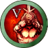 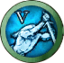 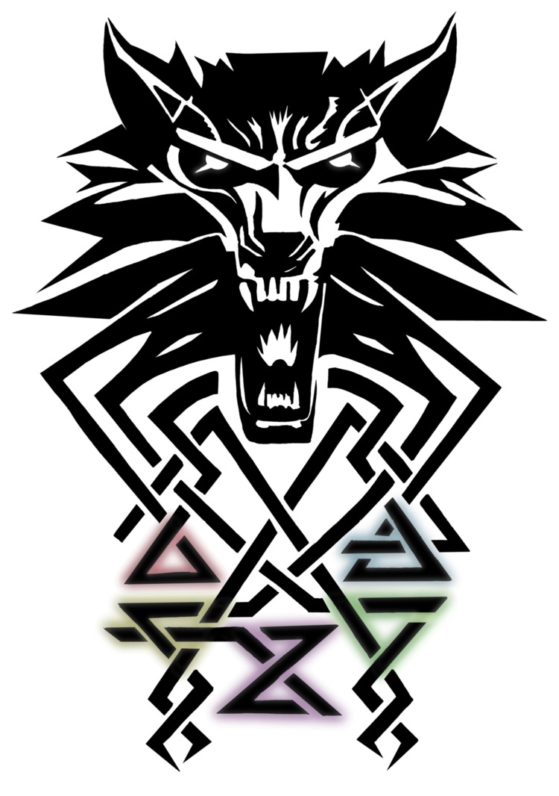 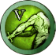
Знаки
Знак Ард - Один из двух моих самых часто используемых знаков. Но тем не менее золотые таланты в этой ветке я не качал. Только серебряные, зато все. Этого вполне хватило для комфортной игры. Оглушить и ваншотнуть. Опрокинуть врага и ваншотнуть. Врага имунного к оглушению и к "долгому опрокидыванию" всеравно приятно опрокинуть даже на 2 секунды, чтобы спокойно его побить, пока он встает. Так что почти полная прокачка ветки без золотых талантов.
Знак Игни - Второй мой часто используемый знак. Люблю этот знак так как он может контролить любого размера толпу врагов, если прокнет эффект страха во время воспламенения. Напали на тебя 5 врагов, ударил Игни и улыбаешься, глядя на то, как половина врагов в страхе отошла в уголок при этом не переставая гореть, ну а другую половину горящих врагов которые не испугались - групповым групповым их стилем!
Знак Квен - в witcher 2 и witcher 3 я постоянно пользовался этим любимым знаком. Пользовался им даже чаще чем ардом с игни. Но увы в witcher 1 я считаю этот знак бесполезным. Вкладывал в него таланты, только когда качать больше было нечего.
Знак Аксий - этим знаком я тоже не пользовался. Вкладывал в него таланты, только когда качать больше было нечего.
Знак Ирден - аналогично двум предыдущим. Не пользовался. Вкладывал в него таланты, только когда качать больше было нечего.
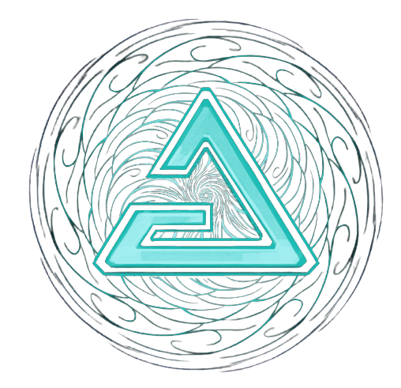 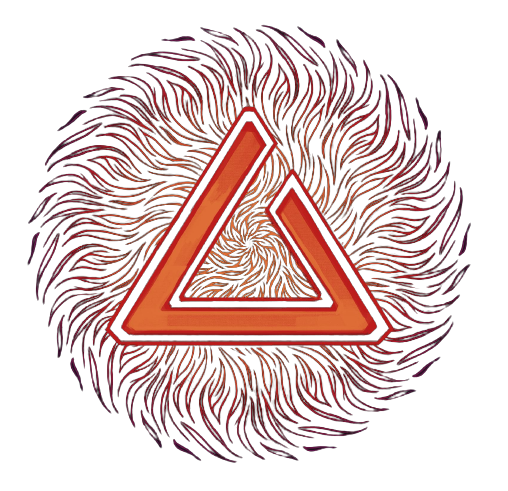 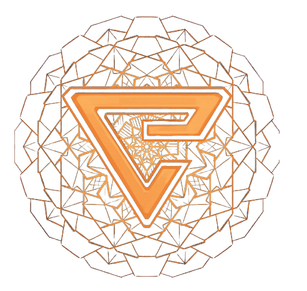 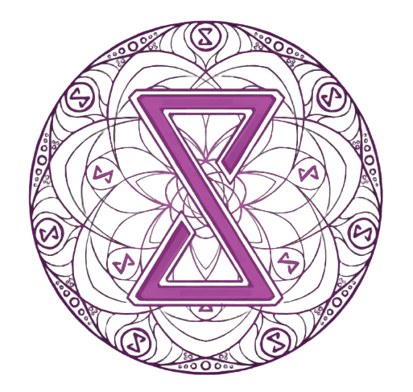
Общее описание талантов стилей и для стального и для серебряного меча
Силовой стиль мечей - самый демажущий стиль. Этим стилем серебряным мечом ты будешь убивать боссов-чудовищ. Этим стилем и стальным мечом ты будешь убивать главных боссов этой игры. Поэтому ветку талантов Силового стиля серебряного меча и ветку талантов Силового стиля стального меча я прокачал ПОЛНОСТЬЮ ВМЕСТЕ С ЗОЛОТЫМИ ТАЛАНТАМИ.
Быстрый стиль мечей - этим стилем я пользовался редко. Быстрых и уворотливых чудовищ и людей я предпочитал убивать либо попаданием силовым стилем, либо оглушив Ардом и ваншотнув, либо если таких быстрых врагов целый пак - Групповым стилем. Пару талантов я все же в эти ветки вложил, в начале игры. Но потом вообще забил на эти ветки талантов.
Групповой стиль мечей - эти ветки талантов я качал параллельно с ветками силовых стилей. Чем дальше по сюжету - тем чаще будут встречаться целые орды врагов. Поэтому переключаться на групповой стиль придется все чаще и чаще. А иногда, я даже одиночного врага убивал групповым стилем, не замечая, что врагов то - только один остался. Это кстати еще одно доказательство того, что качать быстрые стили мечей - не особо то и нужно. Так что обе ветки талантов Группового стиля я прокачал ПОЛНОСТЬЮ ВМЕСТЕ С ЗОЛОТЫМИ ТАЛАНТАМИ.
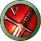 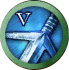 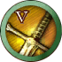